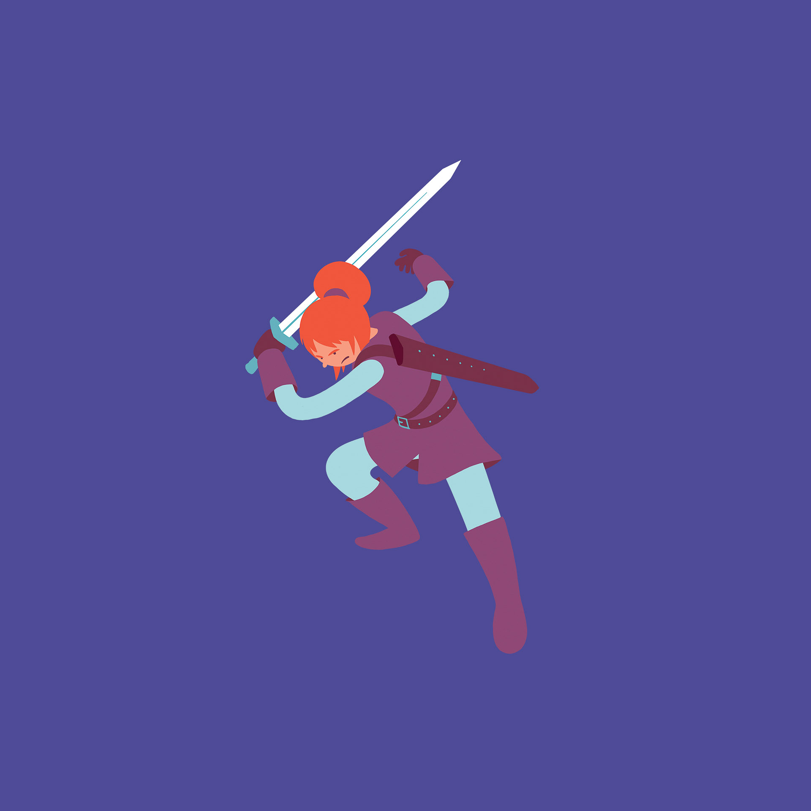
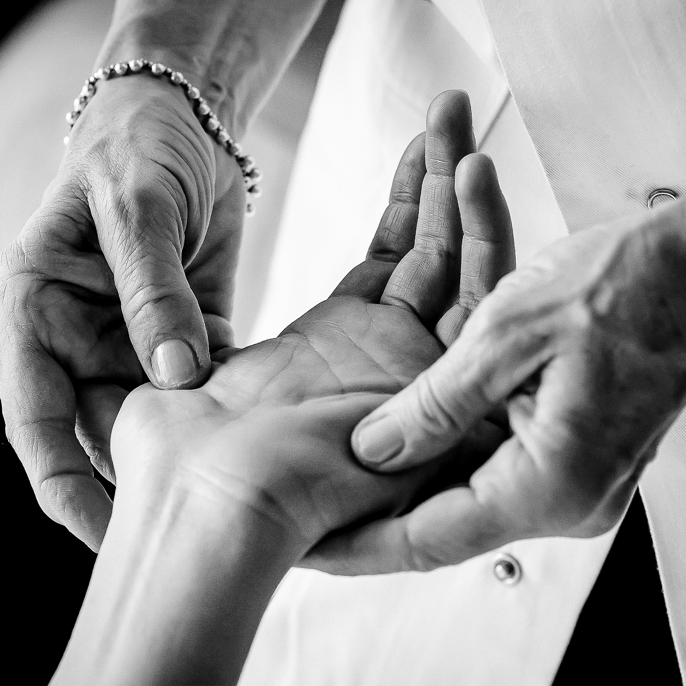
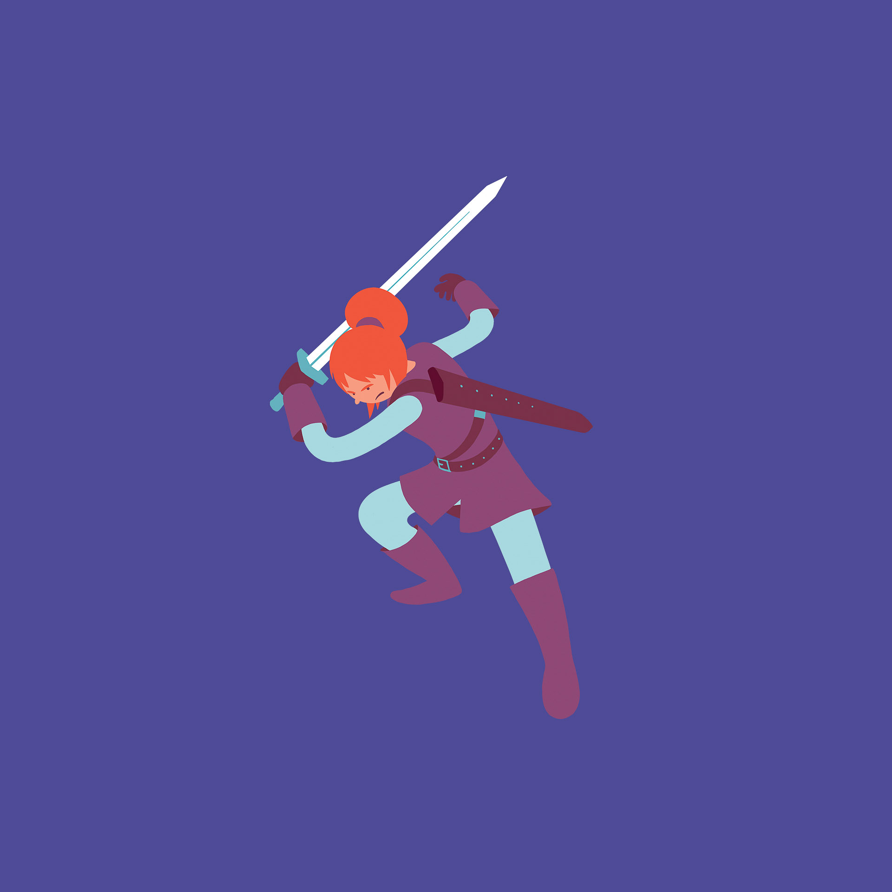
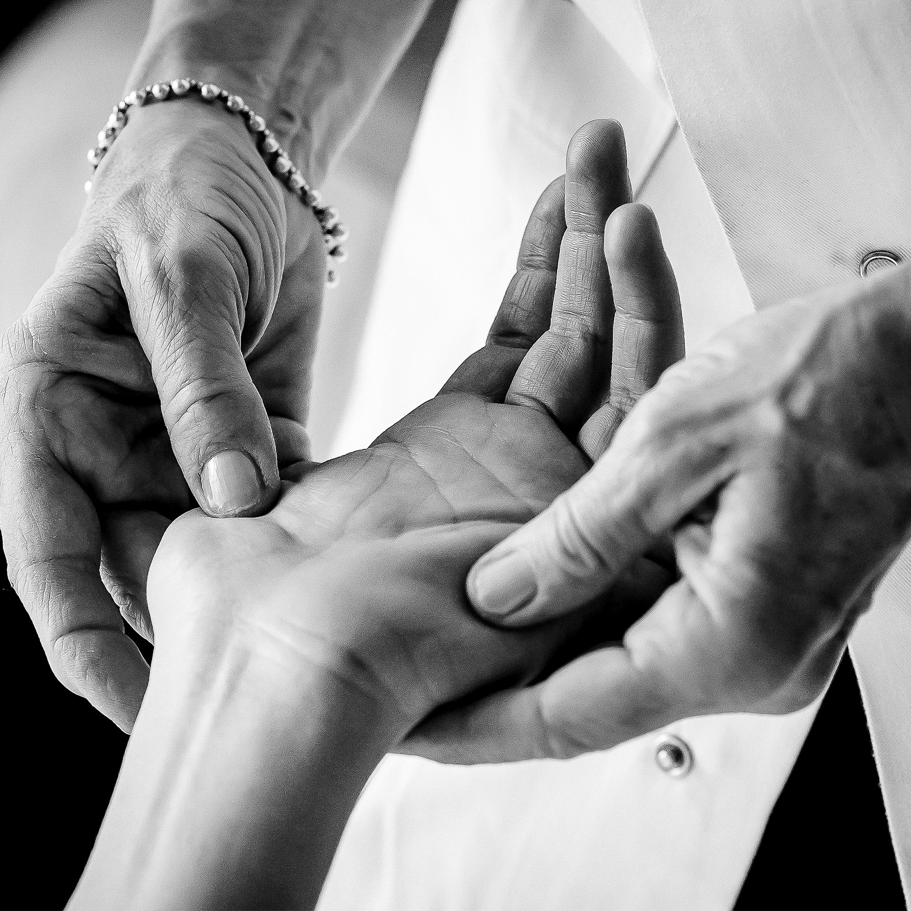

Sybil Rondeau Photographe
- Site WordPress vitrine
- Web Design et photographie : Sybil Rondeau
- Graphisme : Loeiza Coccolini
Je suis photographe professionnelle depuis 2009. ! Je pratique le reportage, ce qui veut dire que je raconte des histoires en images. Le site invite les spectateurs à suivre la ligne rouge (référence à la ligne verte nantaise) qui leur fait découvrir trois types de prestation.
Une refonte vers un site sur-mesure est en cours pour un format moins rectiligne, plus dynamique et graphiquement interessant.
Voir le site
Amime Records
- Site WordPress vitrine
- Web Design, Photographie : Sybil Rondeau
- Graphisme : Adrien Thiot-Rader
Un site ludique pour un label de musique rétro-gaming.
A venir : l'ajout d'un petit jeu interactif.
Voir le site
Elisabeth Perrocheau
- Site WordPress vitrine
- Web Design et photographie : Sybil Rondeau
- Graphisme : -
Elisabeth Perrocheau exerce la médecine chinoise. Son site expose les différentes méthodes qu'elle utilise. La photographie apporte beaucoup à l'esthétique sobre de ce site, qui se veut rassurant et chaleureux.
Voir le site
Artem Nantes
- Site WordPress vitrine
- Web Design : Sybil Rondeau
- Graphisme : Audrey Bonnafi
Un site sobre qui met en valeur le graphisme.
Voir le site
Nia Nantes
- Site WordPress vitrine
- Web Design et photographie : Sybil Rondeau
- Graphisme : -
Un site épuré en rouge et noir.
Voir le site
 


